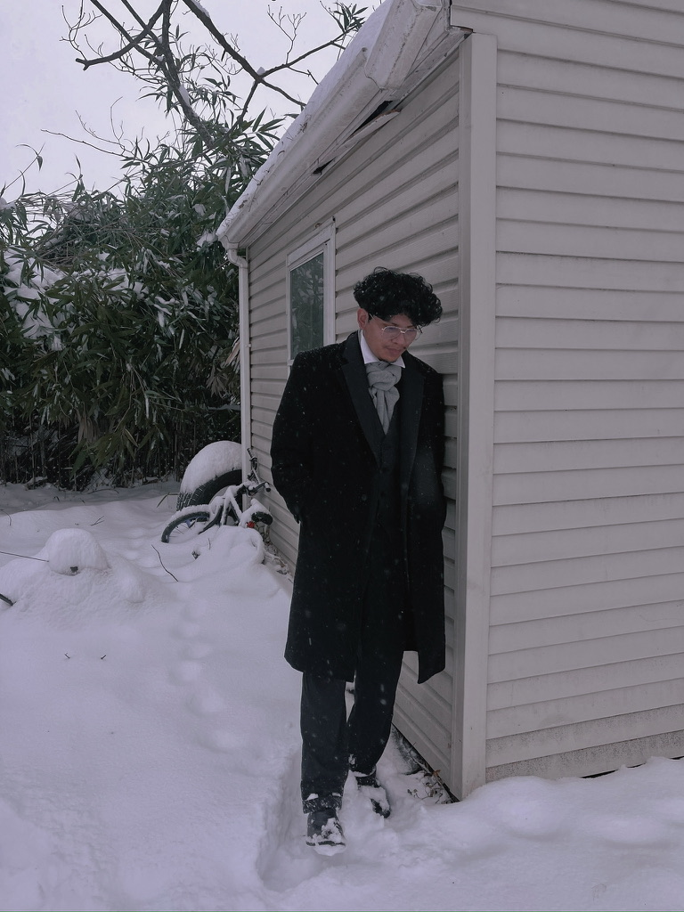
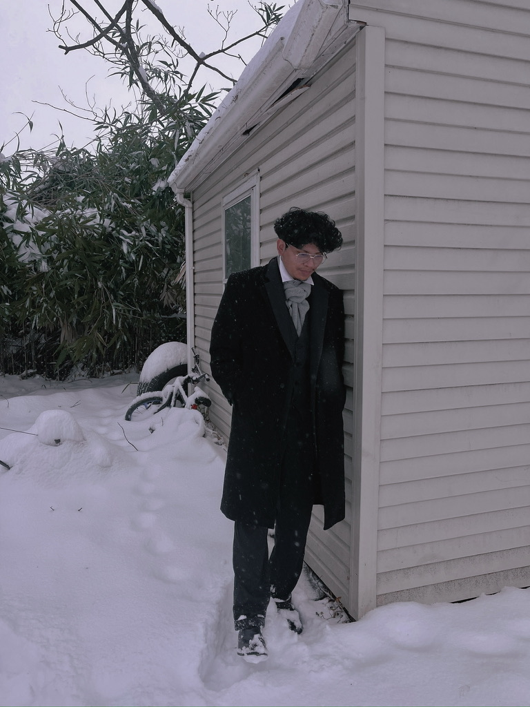

Learn About My Experience
You'll learn about my education, work experience, and technical skills
My Education
For my education, I went to George Mason University to pursue a Bachelor of Science degree in Information Techonology with a double concentration in Database Programming and Techonology, and Web Application Development.
During my time at George Mason University, I have taken courses that have developed my interest and knowledge in Front End Development, UI / UX Design, Website Development, and related expertise. (See here: Technical Skills)
My learning has extended beyond schooling by starting a personal hobby of creating 'CSS Art'. Through this hobby, it provided an extension of my knowledge base of responsive web design, CSS properties, and layout creation.
My Work Experience
Dreamers' Mothers In Action -
Summer 2024
During the summer of 2024, I had the opportunity to freelance for Dreamers’ Mothers In Action, a non-profit organization. During this project, I designed and developed an 8-page Wix website, refining my skills in UI design, user experience, and client collaboration. This experience enhanced my ability to translate organizational needs into an engaging digital presence while strengthening my customer-client relationship management skills.
Additionally, this opportunity allowed me to engage and begin to understand the application of SEO and Accessility optimizations.
Senior Capstone
Dreamers' Mothers In Action -
Fall 2024 -> Spring 2025
For my senior capstone, I chose to continue this client relationship with Dreamers' Mothers In Action because I believe there was more work to be done for the organization. For this capstone, my team and I were tasked to solve for three business problems. We identified challenges in thier event management, community outreach, and social proof.
We integrated Eventbrite to manage events and track attendance; utilized sender and zapier to automate email collection for event reminder, and announcement newsletter using automated email capabilities; additionally, enhance their website with new webpages that demonstrate data and narrative driven informational content to build the organization credibiity.
In this case, I learned how to conduct research that meets sponsor needs with their financial and IT capabilities at the early stages of building up their organization. Additionally, this was a great opportunity to learn how to scale an organization utilizing analyzes technique such as SWOT; learn about project management in applying Agile practices when modification are needed. and more.
My Technical Skills
Some Fun Front End Related Pictures I Created
Some Adobe Lightroom Edits I've Done
 
